Vertical Gardens
Minimize waste, maximize growth. Adaptable & accessible ways to build your own garden with space-optimizable structures.
When working with the Florida Museum of Natural History, our interests were twofold, the ability of students of the University of Florida to grow gardens of their own in smaller, sometimes communal living situations, as well as permanent residents with differing space capabilities that could plant in their yards or community spaces. We connected with the Repurpose Project, a local non-profit effort to divert useful resources from the landfill to the public for art, education and future use. In learning what their inventory was like, and their goals as an organization, we set up templates and workshops for visitors and community members to attend to translate their ideas to materials. Many of the projects require basic tools to maintain accessibility, and promote our goals in adaptability and growth.
Here’s what we came up with:
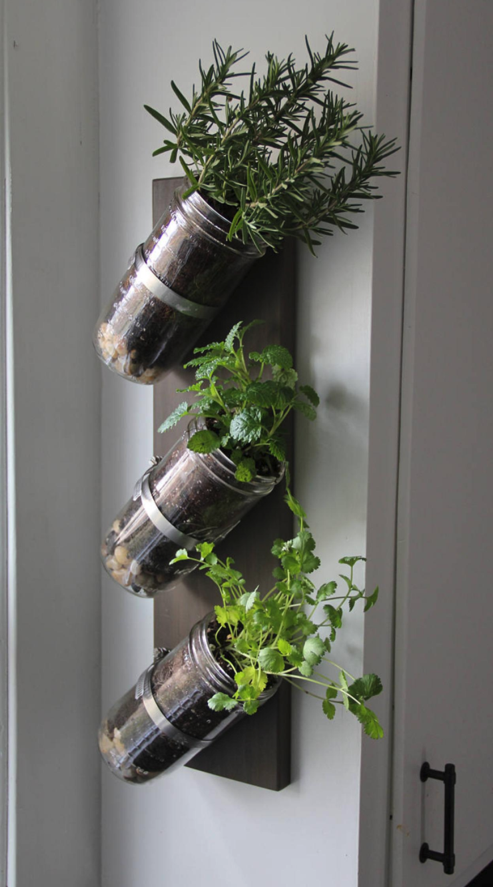Jars are common, inexpensive vessels (at salvage shops, pasta jars, mason jars) that make great pots for herbs in the home. Buy screwing clamps, nets, or fabric onto a piece of wood and inserting the jar - you optimize space and bring fresh herbs into your everyday routine.
 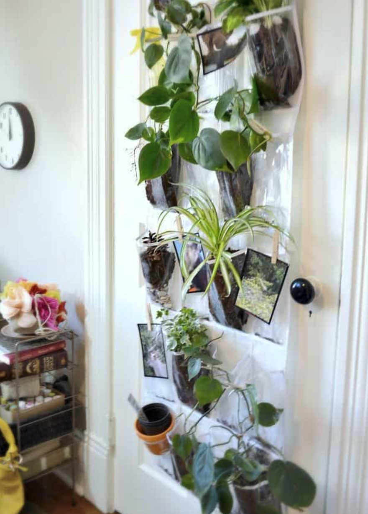
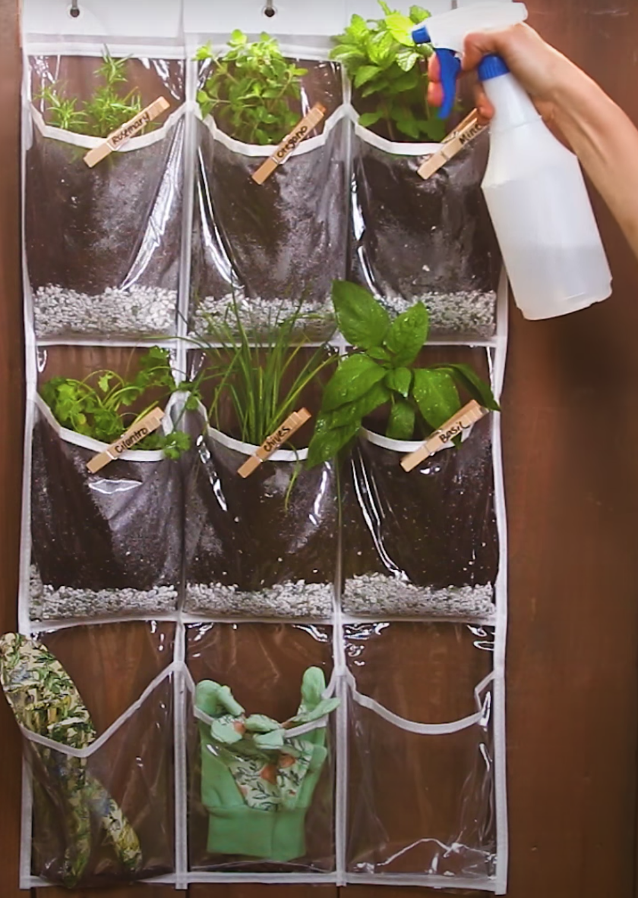
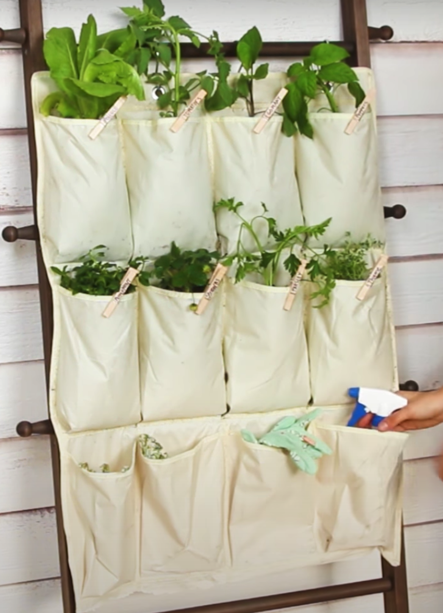
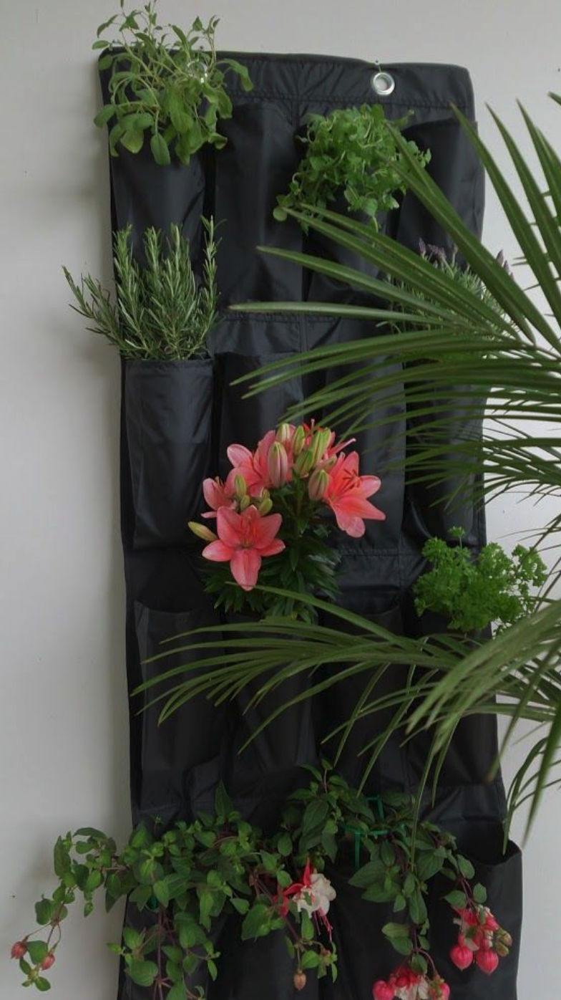
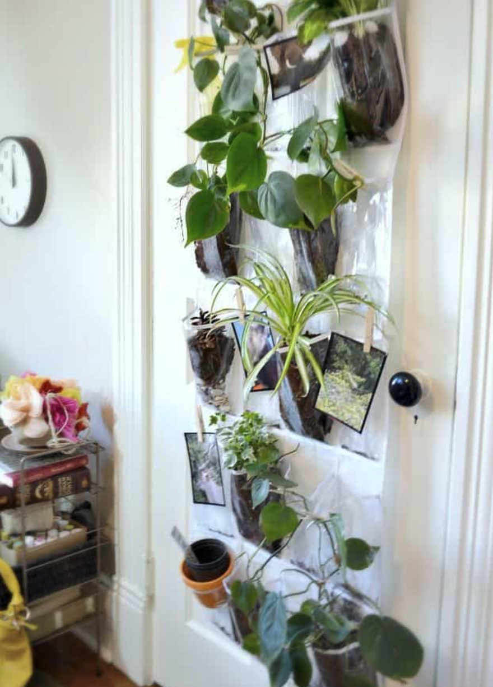
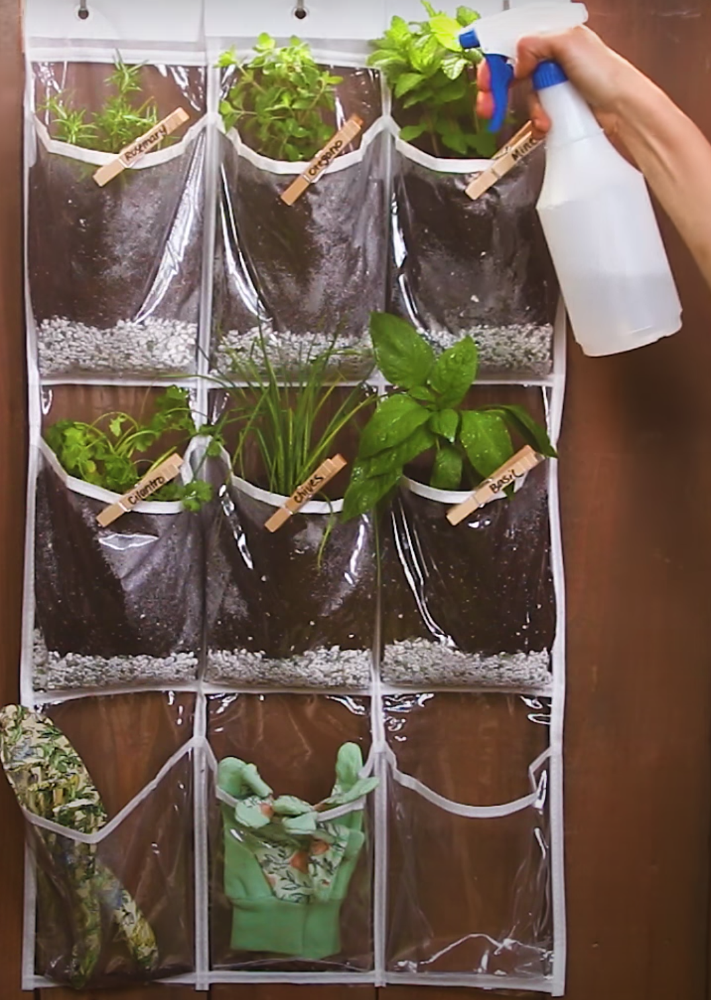
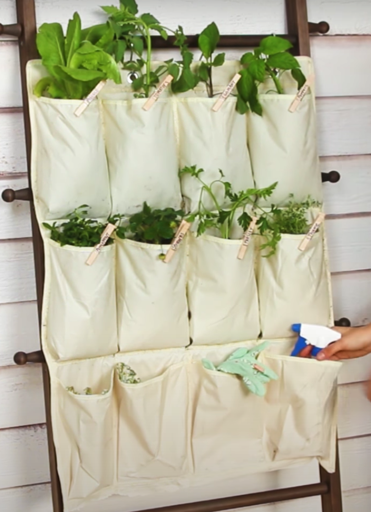
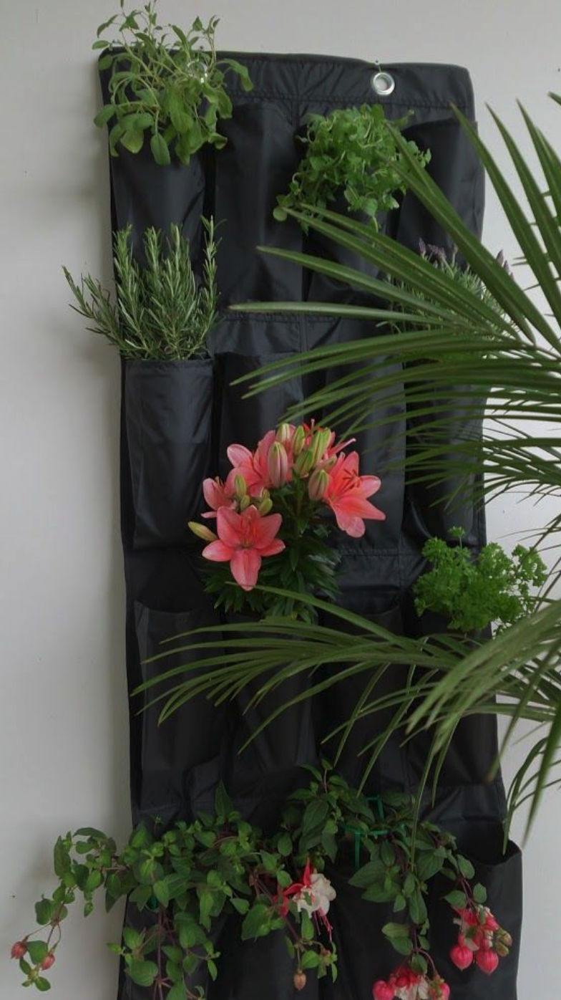
For those that have set-down-roots in apartment living within cities, we found an ingenious way to transform a window into a moveable, sun-soaking garden.
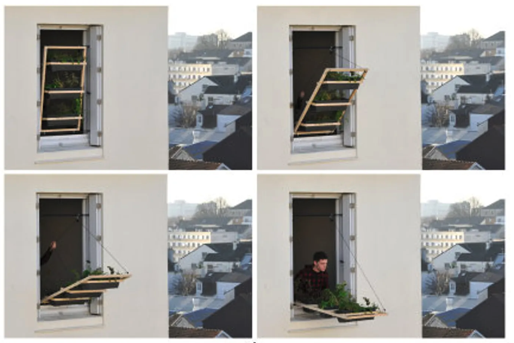 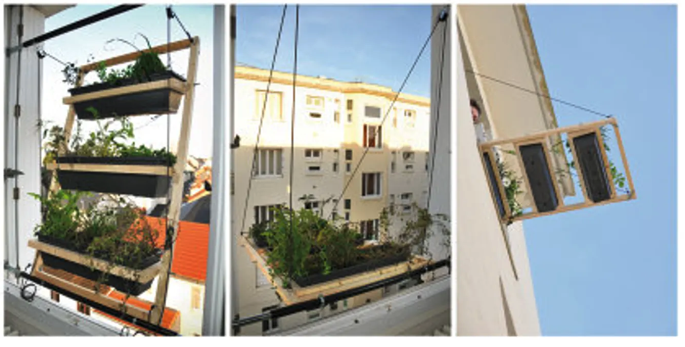Places to get free or low cost gardening materials:
- Your own recycling
- Home Depot or Lowes (think transport material for plants that is tossed)
- Craigslist
- Recycling Centers
- Dumpsters (think retail & bakeries / places that go through a lot of containers)
Free
- Repurpose Project
- Salvage Yards
- Thrift Shops
- Local Nurseries